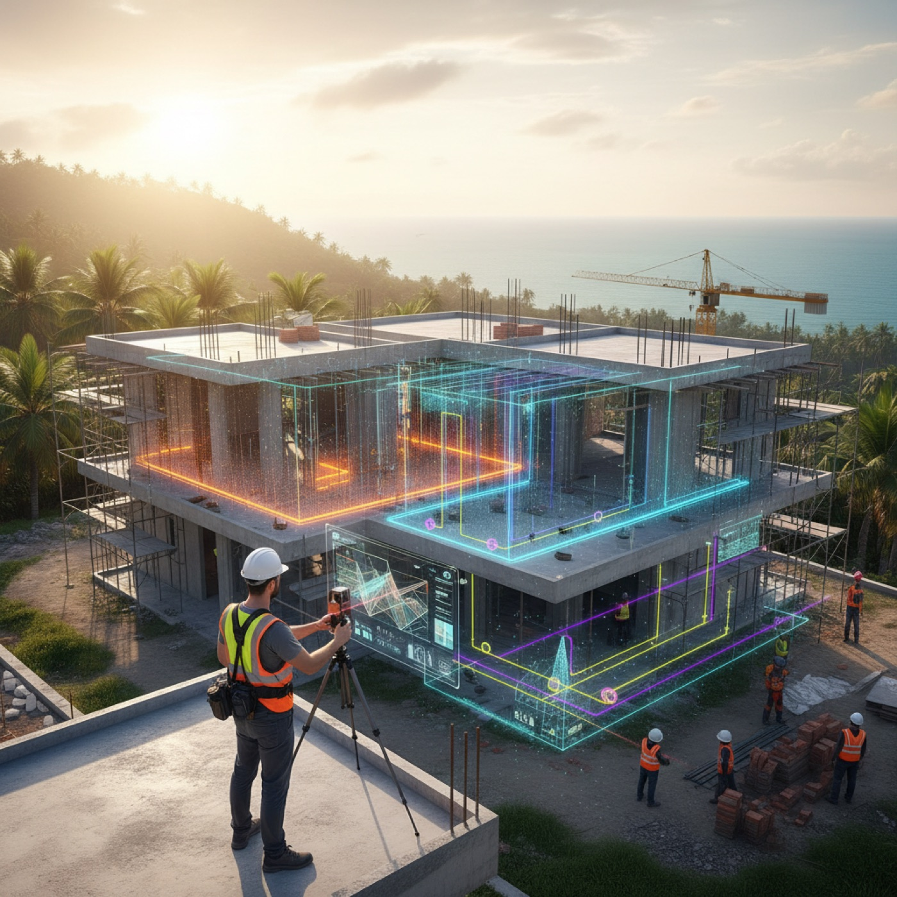
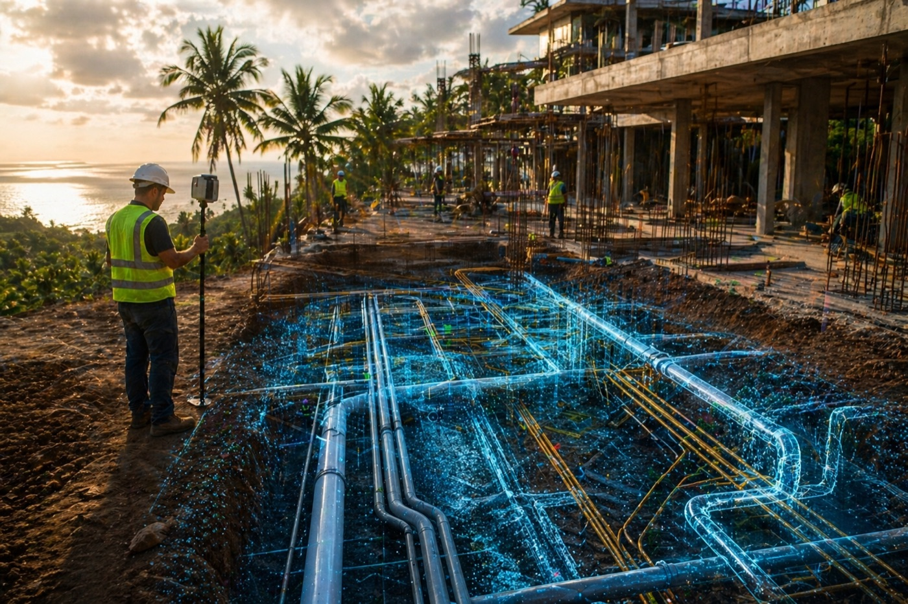

การติดตามไซต์งาน
งานก่อสร้างเปลี่ยนแปลงตลอดเวลา มีการเทฐานราก งานระบบหายลงไปใต้ดิน โครงสร้างสูงขึ้นทีละชั้น และรายละเอียดสำคัญถูกซ่อนหลังผิวงานที่เสร็จแล้ว หากไม่มีการบันทึก ข้อมูลที่มีค่าจะสูญหายระหว่างการก่อสร้าง
EASY SCAN ให้บริการติดตามไซต์งานผ่านการสแกน 3 มิติและการบันทึกดิจิทัล ด้วยการเก็บภาพพื้นที่ในแต่ละช่วง เราสร้างบันทึกภาพความคืบหน้าที่แม่นยำ ซึ่งช่วยให้นักพัฒนา สถาปนิก ผู้รับเหมา และนักลงทุนเข้าใจได้อย่างชัดเจนว่าสร้างอะไรไปแล้วบ้าง

ทำไมจึงสำคัญ
ประวัติดิจิทัลของโครงการ
การตัดสินใจในงานก่อสร้างหลายอย่างเกิดขึ้นอย่างรวดเร็ว โดยมักไม่มีบันทึกสภาพไซต์ระยะยาวที่ครบถ้วน เมื่อกลบท่อ เทฐานราก หรือทำงานดินเสร็จแล้ว การตรวจสอบว่ามีอะไรอยู่ใต้โครงสร้างที่เสร็จแล้วจะเป็นเรื่องยาก
ติดตามing documents each phase in precise 3D — so teams can track progress, compare against plans, preserve hidden infrastructure, reduce misunderstandings and keep a permanent visual archive of the build.
สิ่งที่เราบันทึก
สี่สิ่งที่ควรเก็บบันทึกในทุกงานก่อสร้าง
- 01
การเปลี่ยนแปลงภูมิประเทศ
การปรับระดับ กำแพงกันดิน การปรับความลาดชัน และการขุด ถูกวัดและติดตามในแบบ 3 มิติ — เพื่อตรวจสอบปริมาตรและการเตรียมพื้นที่
- 02
ความคืบหน้าโครงสร้าง
ทุกช่วงสำคัญ ตั้งแต่การขุดและฐานราก ไปจนถึงงานโครงและคอนกรีต — ไทม์ไลน์ที่ชัดเจนว่าอาคารพัฒนาไปอย่างไร
- 03
งานระบบใต้ดิน
ท่อ ระบบระบายน้ำ ท่อร้อยสาย และโครงสร้างพื้นฐาน ถูกสแกนก่อนกลบร่อง — เป็นข้อมูลอ้างอิงสำหรับการบำรุงรักษาในอนาคต
- 04
การบันทึกความคืบหน้า
การสแกนซ้ำตามช่วงเวลาที่กำหนด ช่วยให้ทีมเทียบความคืบหน้าได้เดือนต่อเดือนและระยะต่อระยะ
เริ่มต้น
บันทึกการก่อสร้างในขณะที่ยังทำได้
ตั้งตารางการสแกนสำหรับโครงการของคุณ ส่งที่ตั้งไซต์งานและระยะการก่อสร้างเพื่อเริ่มต้น